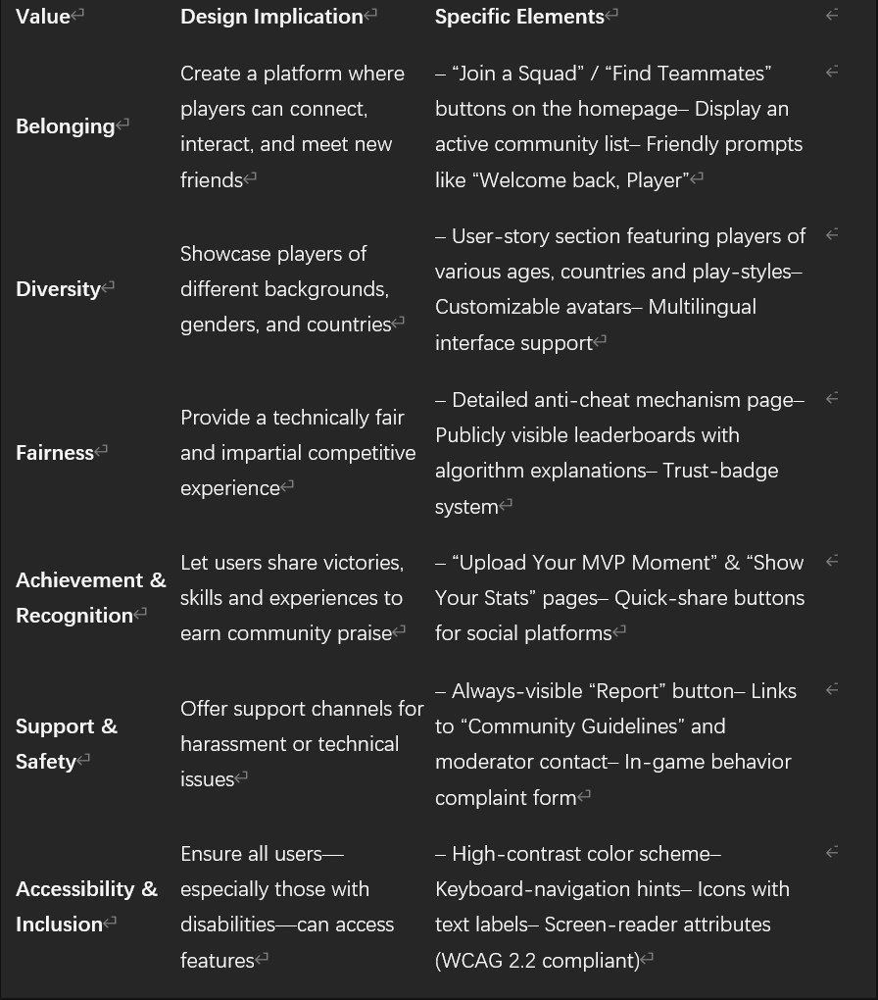

Reflective Design
The focus of this section of the Style Guide is supporting user meaning and identity.
Values Mapping
Imagery and Tone
Identity & Emotional Tone:
我们希望营造赛博朋克画面氛围——高对比度的霓虹绿配合暗色背景，传递科技感、紧张感与团队归属感，吸引热爱策略与协作的玩家。
We aim to create a cyberpunk aesthetic—pairing high-contrast neon green with a dark backdrop to convey
a sense of technological intensity, tension, and team belonging, appealing to players who thrive on
strategy and collaboration.
Homepage Text Example
欢迎来到 Focus 联盟——在这里，你可以分享尖端战术、组建战队开黑，并随时获取最新的赛博世界动态。
Welcome to Focus Alliance—where you can share cutting-edge tactics, form squads for co-op play, and stay updated on the latest cyber-world developments.
Reflective Language and Expression
Checklist
- Inclusive Language：避免刻板或排他用语，尊重所有玩家身份。
- Complexity of Language：使用清晰、易懂的词汇，符合 WCAG 3.1.1 要求。
- Words Reflect Values：用词一致地传递包容、赋能与协作。
- Tone Supports Engagement：语调应亲切、鼓舞，激发长期社区归属感。
Original Text
// Original: Welcome to our forum. This place is for gamers to talk and have fun.
Revised Text
// Revised: 欢迎来到 Focus 联盟！这里汇聚热爱策略与竞技的玩家，畅谈战术、组队开黑，一起在赛博世界中破局。
Annotation:
- “This place is for gamers to talk and have fun” → “汇聚热爱策略与竞技的玩家” 更明确社区定位；
- “组队开黑” 为玩家熟悉术语，提升代入感；
- “赛博世界” 一词与整体视觉一致，强化体验一致性。
Seeing Ourselves
以下列表展示当前社区中注册的成员（动态内容）：
可访问性审查简短报告 / Accessibility Audit Findings
1. 未使用 <fieldset> 分组相关表单控件
检查员解释 / Why:
逻辑相关的输入控件应包含在 <fieldset> 元素内，以便用户代理（如屏幕阅读器）理解它们之间的关系。
Groups of logically related input elements must be contained within a <fieldset>
element (H71).
原始代码 / Original:
修复建议 / Fix:
2. 文件上传控件标签与输入分离
检查员解释 / Why:
每个表单控件必须通过 for 属性与其标签关联，以便屏幕阅读器能够匹配标签。
Each form control must have an accessible name and label association (H44).
原始代码 / Original:
修复建议 / Fix:
3. 焦点指示样式对比不足
检查员解释 / Why:
键盘导航用户必须清晰看到当前焦点位置，否则会在页面中迷失。
Focus indicator must be clearly visible and have sufficient contrast (WCAG 2.4.7).
原始样式 / Original CSS:
button:focus { outline: none; }
a:focus { text-decoration: none; }
修复建议 / Fix:
button:focus,
a:focus {
outline: 2px solid var(--color-accent);
outline-offset: 2px;
}
Dynamic Content Builds Connection
- Displaying real community content helps users see themselves reflected in the site’s purpose and identity.
- Dynamic content can strengthen belonging, pride, and emotional engagement.
- Thoughtful framing and styling matter as much as data retrieval.
Fetching and Displaying Data Safely
- Use
fetch()+.then()orasync/awaitand handle errors. - Always check for
nullbefore rendering and show fallback messaging. - Separate data retrieval from HTML building/styling in your code.
Creating Meaningful HTML Structures
- Use semantic tags like
<section>,<article>, and proper headings. - Design layout to match site identity, values, and tone.
- Use backticks (
`) for template literals when inserting${member.name}.
Customising Appearance with CSS
- Create your own CSS classes for dynamic content.
- Maintain visual consistency with spacing, typography, and colors.
- Ensure dynamic content feels integrated, not “bolted on.”